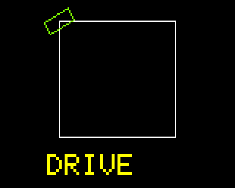
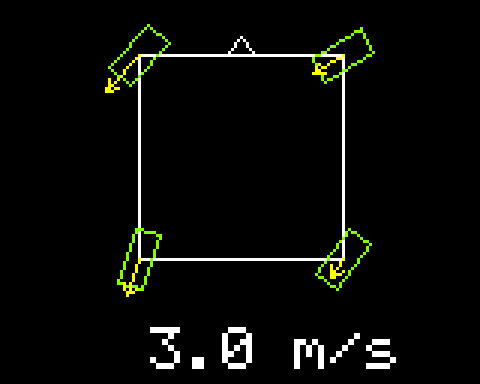
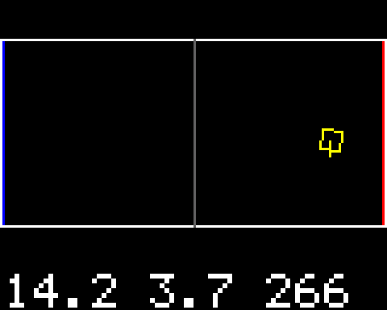
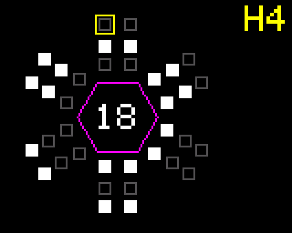
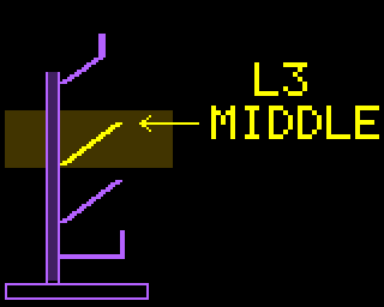

Drawing on a display#
A disp2 can draw lines, rectangles and text anywhere on its 160 × 128 pixels: a drive base with its wheels turned, the robot on the field, a map of what has been scored. The tile does the drawing itself. Your script sends the ends of each line, never the pixels, so a picture that changes ten times a second is cheap to keep up to date.
Drawing needs firmware 0.3.0 or newer on both the main module and the disp2: update them on the config app’s Firmware page. Check with board.tiles(): a tile that can draw has "draw": True in its entry. A screenkey1 on the same firmware can draw too, on its 128 × 128 panel.
A first drawing#
from buttonboard import Board
with Board.open() as board:
canvas = board.canvas(6) # the disp2's address
base = canvas.layer()
base.rect(40, 14, 80, 80, "white")
base.text(32, 104, "DRIVE", "yellow")
wheel = canvas.layer()
wheel.box(40, 14, 9, 19, 30, "lime") # centre, width, height, degrees
canvas.flush() # draws everything

Coordinates are pixels. (0, 0) is the top left corner; x goes right to 159 and y goes down to 127.
Layers, and only sending what changed#
A canvas is the panel. A layer is a group of shapes that change together, such as one wheel, the robot, or a label. Layers made later are drawn on top of earlier ones.
Shapes stay on a layer until you call clear() on it. So something that never changes is drawn once, and something that moves is cleared and drawn again each time round the loop:
while True:
heading = read_from_networktables("heading")
wheel.clear().box(40, 14, 9, 19, heading, "lime")
canvas.flush()
flush() compares each layer with what it sent last time and sends only the difference. It returns how many messages it sent:
- Nothing changed:
flush()sends nothing and returns 0. A loop that runs fast costs nothing while the robot is still. - A shape moved: it is drawn over in the background colour where it was, then drawn where it is. Anything the old shape crossed, such as the frame under the wheel above, is drawn again so it is not left with a gap.
- A solid rectangle changed colour: it is just drawn over, one message.
The panel cannot be read back and the tile keeps no copy of the drawing. Everything the panel shows, your canvas remembers. That is why shapes are erased by drawing over them, and why the canvas has to be told when the panel has gone blank (see below).
Shapes#
| Call | Draws |
|---|---|
layer.line(x0, y0, x1, y1, colour) |
A line |
layer.poly(points, colour, closed=False) |
Lines joining a list of (x, y) points; closed=True joins the last to the first |
layer.rect(x, y, w, h, colour) |
The outline of a rectangle |
layer.fill(x, y, w, h, colour) |
A solid rectangle |
layer.box(cx, cy, w, h, degrees, colour) |
The outline of a rectangle centred on (cx, cy), turned clockwise. A wheel, a robot |
layer.circle(cx, cy, r, colour) |
A circle, drawn as short straight lines |
layer.arrow(x0, y0, x1, y1, colour) |
A line with an arrowhead at (x1, y1). A speed, a direction |
layer.text(x, y, text, fg, bg="black") |
Text, its top left corner at (x, y) |
layer.clear() |
Empties the layer |
Each call returns the layer, so they chain: layer.clear().box(...).arrow(...).
- The background is black unless you say otherwise:
board.canvas(6, background="navy")takes any colour. - Colours are the ones LEDs take: a name (
"red","lime","orange","alliance_blue"…),"#RRGGBB", or an(r, g, b)triple. - Coordinates may be decimals, which is easier when they come out of trigonometry. They are rounded when sent.
- Off the edge: a shape that goes past the edge of the panel is cut off at the edge. Nothing is refused.
- Text is 12 pixels wide and 16 tall per character, so 13 characters fit across a disp2. Each character is a solid block of its background colour. Characters that would go past the edge are dropped.
Drawing over a stored picture#
A canvas can draw on top of a picture stored on the tile, such as a picture of the field, instead of a plain colour. Store the picture once (Loading a picture into a slot, or board.disp_store_image(6, 0, "field.png"), which needs the [pictures] extra), then name the slot:
canvas = board.canvas(6, slot=0)
robot = canvas.layer()
while True:
x, y, heading = read_pose()
robot.clear().box(x, y, 9, 9, heading, "yellow")
canvas.flush()
The first flush() shows the picture. After that, moving the robot sends two messages, however complicated its shape: one that puts back the part of the picture it was covering, and one that draws it in its new place.
Back to text#
While a drawing is on the panel, the text grid (board.screen(), disp_text) is not shown, so writing a row does not cut a stripe through the drawing. board.disp_clear(6) blanks the panel and hands it back to the text grid.
To use both at once, put the text in the drawing with layer.text().
When the tile has been away#
A tile that is unplugged, or that hears nothing for two seconds, comes back with a blank panel. Your canvas still thinks the drawing is there. Call canvas.forget() and the next flush() clears the panel and draws everything again. The board reports a tile coming back as an event:
board.on("tile", lambda ev: ev["addr"] == 6 and canvas.forget())
If a flush() raises BoardError, call canvas.forget() before trying again, for the same reason: you cannot tell how much of it reached the panel.
Try it without a board#
MockBoard draws exactly as the tile does, using the same line stepping and the same letters. You can write and check a drawing with nothing plugged in:
from buttonboard import MockBoard
board = MockBoard() # has a disp2 at address 6
canvas = board.canvas(6)
# ... draw and flush as above ...
board.state.panel(6).save("panel.png")
panel.png is the panel, three times life size. Nothing else needs to be installed.
Examples#
Four complete programs read the robot over NetworkTables and draw it. They are in the examples folder of BuildingBlockRobotics/BBRButtonBoard, and each section below links to its own script. Each one runs with --demo for a made-up robot, and --mock --png out.png for no board either.
python3 -m pip install "bbr-buttonboard[networktables]"
python3 ds_swerve.py --team 1234
Swerve drive#

ds_swerve.py draws the chassis from above, with each module turned to its angle and an arrow for its speed. The front of the robot is the top of the panel. The robot publishes its module states:
SwerveModuleState[] s = drive.getModuleStates();
SmartDashboard.putNumberArray("SwerveStates", new double[] {
s[0].angle.getDegrees(), s[0].speedMetersPerSecond, s[1].angle.getDegrees(), s[1].speedMetersPerSecond,
s[2].angle.getDegrees(), s[2].speedMetersPerSecond, s[3].angle.getDegrees(), s[3].speedMetersPerSecond});
The robot on the field#

ds_field.py draws the field and a small robot at its position and heading. It reads what a WPILib Field2d already publishes, so a robot that puts its pose on the dashboard needs no changes:
private final Field2d field = new Field2d();
SmartDashboard.putData("Field", field); // once
field.setRobotPose(drive.getPose()); // in robotPeriodic()
Pass --image field.png to draw over a picture of the field instead of lines. It is stored on the tile the first time, which takes a few seconds, and only again if the file changes. The default field is 16.54 × 8.07 m; --length and --width change it.
The REEFSCAPE reef#

ds_reef.py draws the reef from above with three squares on each of the twelve branches, one for each of L2, L3 and L4, filled in as coral is scored. The number in the middle is the count, and the yellow ring and corner label are the branch the robot is going for. The robot publishes 36 booleans, branch A’s L2, L3 and L4, then B’s, through to L, and optionally the index of its target:
SmartDashboard.putBooleanArray("Reef", scored); // boolean[36]
SmartDashboard.putNumber("ReefTarget", targetIndex); // -1 for none
The reef from the side: what the robot will score on#

ds_reef_side.py draws one face of the reef as the drivers see it: the trough (L1), the two angled branches (L2, L3) and the upright one at the top (L4). The level the robot is set up for is lit in yellow, with an arrow and its name, so the drivers can see at a glance what will happen when they score.
The operator’s L2, L3 and L4 buttons go to the robot like any other button. The robot publishes the level it has chosen, 1 to 4, or 0 for none:
SmartDashboard.putNumber("ReefLevel", targetLevel);
The panel then shows what the robot will actually do, not just which button was pressed last.
To try it before the robot code is written, --mx4 reads the keys of an mx4 on the panel instead. The three keys in a row choose L2, L3 and L4, left to right, and the key on its own above them chooses the trough. The last key pressed stays chosen, and on an mx4 with LEDs it lights yellow. --keys does the same with any tile: --keys 3:-1,0,1,2 makes the three keys of the tile at address 3 choose L2, L3 and L4 (keys count from 0, and -1 leaves L1 out).
Changing level is about eight messages. Holding a level costs none.
How fast it is#
Each message to the panel takes about 6 ms of the bus’s spare time, so roughly 150 messages a second are available, shared with LED colours and display text. Button presses are never delayed by any of it.
| Change | Messages |
|---|---|
| Nothing | 0 |
| A marker changes colour | 1 |
| A robot moves over a stored picture | 2 |
| One swerve module turns | about 4 |
| All four swerve modules turn | about 6 |
| Clearing and redrawing the whole panel | one, plus about one per colour of the drawing |
Shapes of the same colour that do not overlap travel together, so a loop at 10 updates a second uses a small part of what is available.
Underneath the canvas#
The canvas is built from these calls. Each sends one message, and none of them clips, erases or remembers anything for you: every point has to be on the panel.
| Call | Sends |
|---|---|
board.disp_draw_line(addr, colour, [(x0, y0, x1, y1), ...]) |
Up to 16 separate lines |
board.disp_draw_poly(addr, colour, [(x, y), ...]) |
Lines joining 2 to 32 points |
board.disp_draw_fill(addr, colour, [(x, y, w, h), ...]) |
Up to 16 solid rectangles |
board.disp_draw_text(addr, x, y, text, fg, bg) |
Text at a pixel position |
board.disp_slot_rect(addr, slot, x, y, w, h) |
Part of a stored picture, put back |
board.disp_show_image(addr, file) |
A whole two-colour picture, nothing stored |
The serial commands behind them are listed in the command reference.